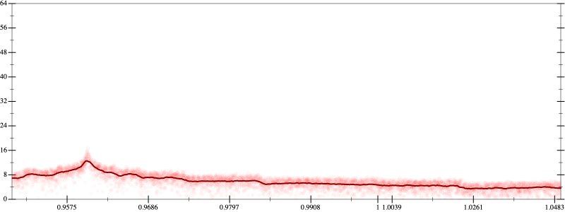
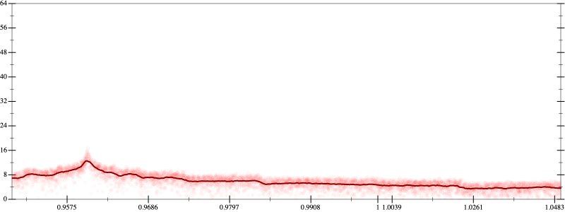

Initial program 5.9
\[\left(\left(\left(0.273438 + -9.84375 \cdot \left(x \cdot x\right)\right) + 54.140625 \cdot \left(\left(\left(x \cdot x\right) \cdot x\right) \cdot x\right)\right) + -93.84375 \cdot \left(\left(\left(\left(\left(x \cdot x\right) \cdot x\right) \cdot x\right) \cdot x\right) \cdot x\right)\right) + 50.273438 \cdot \left(\left(\left(\left(\left(\left(\left(x \cdot x\right) \cdot x\right) \cdot x\right) \cdot x\right) \cdot x\right) \cdot x\right) \cdot x\right)\]
Applied simplify5.6
\[\leadsto \color{blue}{\left(\left(\left(x \cdot 54.140625\right) \cdot {x}^{3} + x \cdot \left(x \cdot -9.84375\right)\right) + 0.273438\right) + \left({x}^{3} \cdot {x}^{3}\right) \cdot \left(-93.84375 + \left(50.273438 \cdot x\right) \cdot x\right)}\]
- Using strategy
rm Applied add-cube-cbrt5.6
\[\leadsto \color{blue}{\left(\sqrt[3]{\left(\left(\left(x \cdot 54.140625\right) \cdot {x}^{3} + x \cdot \left(x \cdot -9.84375\right)\right) + 0.273438\right) + \left({x}^{3} \cdot {x}^{3}\right) \cdot \left(-93.84375 + \left(50.273438 \cdot x\right) \cdot x\right)} \cdot \sqrt[3]{\left(\left(\left(x \cdot 54.140625\right) \cdot {x}^{3} + x \cdot \left(x \cdot -9.84375\right)\right) + 0.273438\right) + \left({x}^{3} \cdot {x}^{3}\right) \cdot \left(-93.84375 + \left(50.273438 \cdot x\right) \cdot x\right)}\right) \cdot \sqrt[3]{\left(\left(\left(x \cdot 54.140625\right) \cdot {x}^{3} + x \cdot \left(x \cdot -9.84375\right)\right) + 0.273438\right) + \left({x}^{3} \cdot {x}^{3}\right) \cdot \left(-93.84375 + \left(50.273438 \cdot x\right) \cdot x\right)}}\]
Taylor expanded around inf 5.4
\[\leadsto \left(\sqrt[3]{\left(\left(\left(x \cdot 54.140625\right) \cdot {x}^{3} + x \cdot \left(x \cdot -9.84375\right)\right) + 0.273438\right) + \left({x}^{3} \cdot {x}^{3}\right) \cdot \left(-93.84375 + \left(50.273438 \cdot x\right) \cdot x\right)} \cdot \sqrt[3]{\left(\left(\left(x \cdot 54.140625\right) \cdot {x}^{3} + x \cdot \left(x \cdot -9.84375\right)\right) + 0.273438\right) + \left({x}^{3} \cdot {x}^{3}\right) \cdot \left(-93.84375 + \left(50.273438 \cdot x\right) \cdot x\right)}\right) \cdot \sqrt[3]{\color{blue}{\left(54.140625 \cdot {x}^{4} + \left(0.273438 + 50.273438 \cdot {x}^{8}\right)\right) - \left(9.84375 \cdot {x}^{2} + 93.84375 \cdot {x}^{6}\right)}}\]
- Using strategy
rm Applied add-log-exp5.4
\[\leadsto \left(\sqrt[3]{\left(\left(\left(x \cdot 54.140625\right) \cdot {x}^{3} + x \cdot \left(x \cdot -9.84375\right)\right) + 0.273438\right) + \left({x}^{3} \cdot {x}^{3}\right) \cdot \left(-93.84375 + \left(50.273438 \cdot x\right) \cdot x\right)} \cdot \sqrt[3]{\left(\left(\left(x \cdot 54.140625\right) \cdot {x}^{3} + x \cdot \left(x \cdot -9.84375\right)\right) + 0.273438\right) + \left({x}^{3} \cdot {x}^{3}\right) \cdot \left(-93.84375 + \left(50.273438 \cdot x\right) \cdot x\right)}\right) \cdot \sqrt[3]{\left(54.140625 \cdot {x}^{4} + \left(0.273438 + 50.273438 \cdot {x}^{8}\right)\right) - \left(9.84375 \cdot {x}^{2} + \color{blue}{\log \left(e^{93.84375 \cdot {x}^{6}}\right)}\right)}\]
Applied add-log-exp5.4
\[\leadsto \left(\sqrt[3]{\left(\left(\left(x \cdot 54.140625\right) \cdot {x}^{3} + x \cdot \left(x \cdot -9.84375\right)\right) + 0.273438\right) + \left({x}^{3} \cdot {x}^{3}\right) \cdot \left(-93.84375 + \left(50.273438 \cdot x\right) \cdot x\right)} \cdot \sqrt[3]{\left(\left(\left(x \cdot 54.140625\right) \cdot {x}^{3} + x \cdot \left(x \cdot -9.84375\right)\right) + 0.273438\right) + \left({x}^{3} \cdot {x}^{3}\right) \cdot \left(-93.84375 + \left(50.273438 \cdot x\right) \cdot x\right)}\right) \cdot \sqrt[3]{\left(54.140625 \cdot {x}^{4} + \left(0.273438 + 50.273438 \cdot {x}^{8}\right)\right) - \left(\color{blue}{\log \left(e^{9.84375 \cdot {x}^{2}}\right)} + \log \left(e^{93.84375 \cdot {x}^{6}}\right)\right)}\]
Applied sum-log5.4
\[\leadsto \left(\sqrt[3]{\left(\left(\left(x \cdot 54.140625\right) \cdot {x}^{3} + x \cdot \left(x \cdot -9.84375\right)\right) + 0.273438\right) + \left({x}^{3} \cdot {x}^{3}\right) \cdot \left(-93.84375 + \left(50.273438 \cdot x\right) \cdot x\right)} \cdot \sqrt[3]{\left(\left(\left(x \cdot 54.140625\right) \cdot {x}^{3} + x \cdot \left(x \cdot -9.84375\right)\right) + 0.273438\right) + \left({x}^{3} \cdot {x}^{3}\right) \cdot \left(-93.84375 + \left(50.273438 \cdot x\right) \cdot x\right)}\right) \cdot \sqrt[3]{\left(54.140625 \cdot {x}^{4} + \left(0.273438 + 50.273438 \cdot {x}^{8}\right)\right) - \color{blue}{\log \left(e^{9.84375 \cdot {x}^{2}} \cdot e^{93.84375 \cdot {x}^{6}}\right)}}\]
Applied add-log-exp5.4
\[\leadsto \left(\sqrt[3]{\left(\left(\left(x \cdot 54.140625\right) \cdot {x}^{3} + x \cdot \left(x \cdot -9.84375\right)\right) + 0.273438\right) + \left({x}^{3} \cdot {x}^{3}\right) \cdot \left(-93.84375 + \left(50.273438 \cdot x\right) \cdot x\right)} \cdot \sqrt[3]{\left(\left(\left(x \cdot 54.140625\right) \cdot {x}^{3} + x \cdot \left(x \cdot -9.84375\right)\right) + 0.273438\right) + \left({x}^{3} \cdot {x}^{3}\right) \cdot \left(-93.84375 + \left(50.273438 \cdot x\right) \cdot x\right)}\right) \cdot \sqrt[3]{\left(54.140625 \cdot {x}^{4} + \color{blue}{\log \left(e^{0.273438 + 50.273438 \cdot {x}^{8}}\right)}\right) - \log \left(e^{9.84375 \cdot {x}^{2}} \cdot e^{93.84375 \cdot {x}^{6}}\right)}\]
Applied add-log-exp5.4
\[\leadsto \left(\sqrt[3]{\left(\left(\left(x \cdot 54.140625\right) \cdot {x}^{3} + x \cdot \left(x \cdot -9.84375\right)\right) + 0.273438\right) + \left({x}^{3} \cdot {x}^{3}\right) \cdot \left(-93.84375 + \left(50.273438 \cdot x\right) \cdot x\right)} \cdot \sqrt[3]{\left(\left(\left(x \cdot 54.140625\right) \cdot {x}^{3} + x \cdot \left(x \cdot -9.84375\right)\right) + 0.273438\right) + \left({x}^{3} \cdot {x}^{3}\right) \cdot \left(-93.84375 + \left(50.273438 \cdot x\right) \cdot x\right)}\right) \cdot \sqrt[3]{\left(\color{blue}{\log \left(e^{54.140625 \cdot {x}^{4}}\right)} + \log \left(e^{0.273438 + 50.273438 \cdot {x}^{8}}\right)\right) - \log \left(e^{9.84375 \cdot {x}^{2}} \cdot e^{93.84375 \cdot {x}^{6}}\right)}\]
Applied sum-log5.4
\[\leadsto \left(\sqrt[3]{\left(\left(\left(x \cdot 54.140625\right) \cdot {x}^{3} + x \cdot \left(x \cdot -9.84375\right)\right) + 0.273438\right) + \left({x}^{3} \cdot {x}^{3}\right) \cdot \left(-93.84375 + \left(50.273438 \cdot x\right) \cdot x\right)} \cdot \sqrt[3]{\left(\left(\left(x \cdot 54.140625\right) \cdot {x}^{3} + x \cdot \left(x \cdot -9.84375\right)\right) + 0.273438\right) + \left({x}^{3} \cdot {x}^{3}\right) \cdot \left(-93.84375 + \left(50.273438 \cdot x\right) \cdot x\right)}\right) \cdot \sqrt[3]{\color{blue}{\log \left(e^{54.140625 \cdot {x}^{4}} \cdot e^{0.273438 + 50.273438 \cdot {x}^{8}}\right)} - \log \left(e^{9.84375 \cdot {x}^{2}} \cdot e^{93.84375 \cdot {x}^{6}}\right)}\]
Applied diff-log5.3
\[\leadsto \left(\sqrt[3]{\left(\left(\left(x \cdot 54.140625\right) \cdot {x}^{3} + x \cdot \left(x \cdot -9.84375\right)\right) + 0.273438\right) + \left({x}^{3} \cdot {x}^{3}\right) \cdot \left(-93.84375 + \left(50.273438 \cdot x\right) \cdot x\right)} \cdot \sqrt[3]{\left(\left(\left(x \cdot 54.140625\right) \cdot {x}^{3} + x \cdot \left(x \cdot -9.84375\right)\right) + 0.273438\right) + \left({x}^{3} \cdot {x}^{3}\right) \cdot \left(-93.84375 + \left(50.273438 \cdot x\right) \cdot x\right)}\right) \cdot \sqrt[3]{\color{blue}{\log \left(\frac{e^{54.140625 \cdot {x}^{4}} \cdot e^{0.273438 + 50.273438 \cdot {x}^{8}}}{e^{9.84375 \cdot {x}^{2}} \cdot e^{93.84375 \cdot {x}^{6}}}\right)}}\]
- Using strategy
rm Applied exp-prod5.2
\[\leadsto \left(\sqrt[3]{\left(\left(\left(x \cdot 54.140625\right) \cdot {x}^{3} + x \cdot \left(x \cdot -9.84375\right)\right) + 0.273438\right) + \left({x}^{3} \cdot {x}^{3}\right) \cdot \left(-93.84375 + \left(50.273438 \cdot x\right) \cdot x\right)} \cdot \sqrt[3]{\left(\left(\left(x \cdot 54.140625\right) \cdot {x}^{3} + x \cdot \left(x \cdot -9.84375\right)\right) + 0.273438\right) + \left({x}^{3} \cdot {x}^{3}\right) \cdot \left(-93.84375 + \left(50.273438 \cdot x\right) \cdot x\right)}\right) \cdot \sqrt[3]{\log \left(\frac{e^{54.140625 \cdot {x}^{4}} \cdot e^{0.273438 + 50.273438 \cdot {x}^{8}}}{e^{9.84375 \cdot {x}^{2}} \cdot \color{blue}{{\left(e^{93.84375}\right)}^{\left({x}^{6}\right)}}}\right)}\]
 
